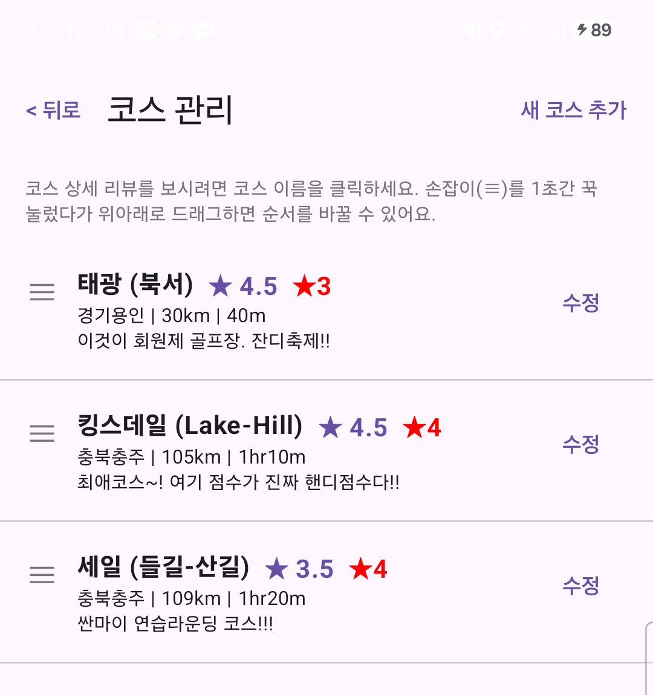
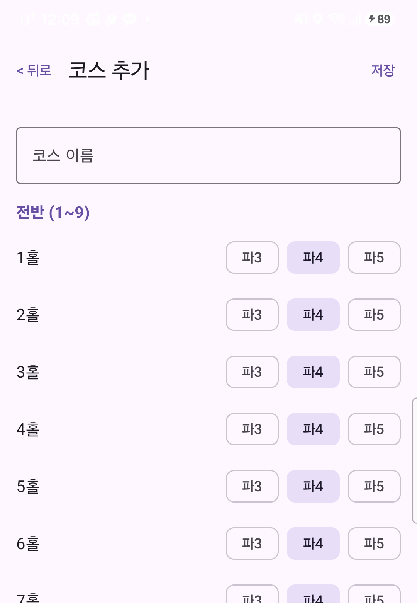
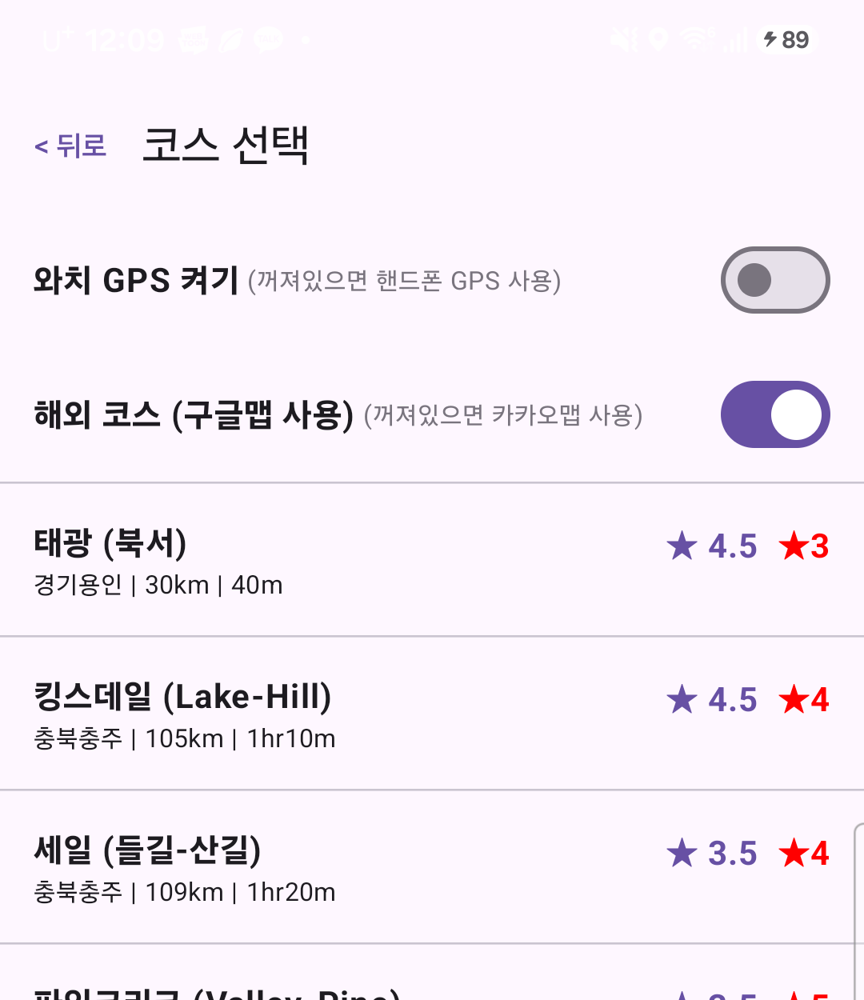
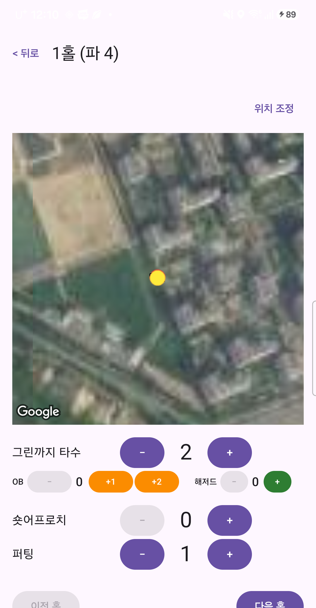
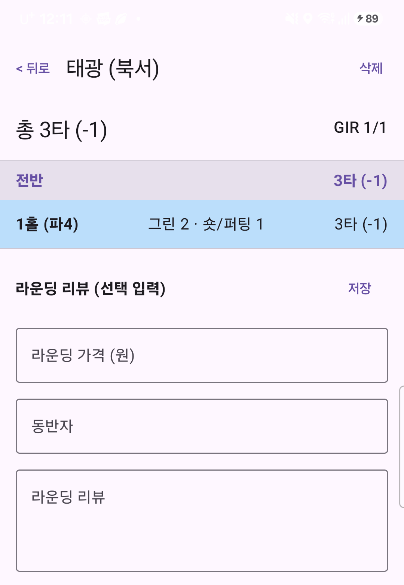
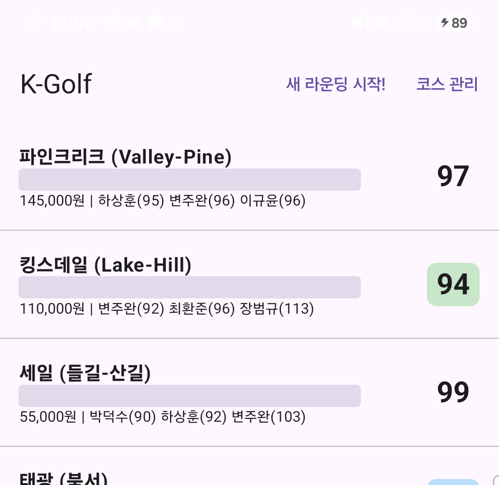
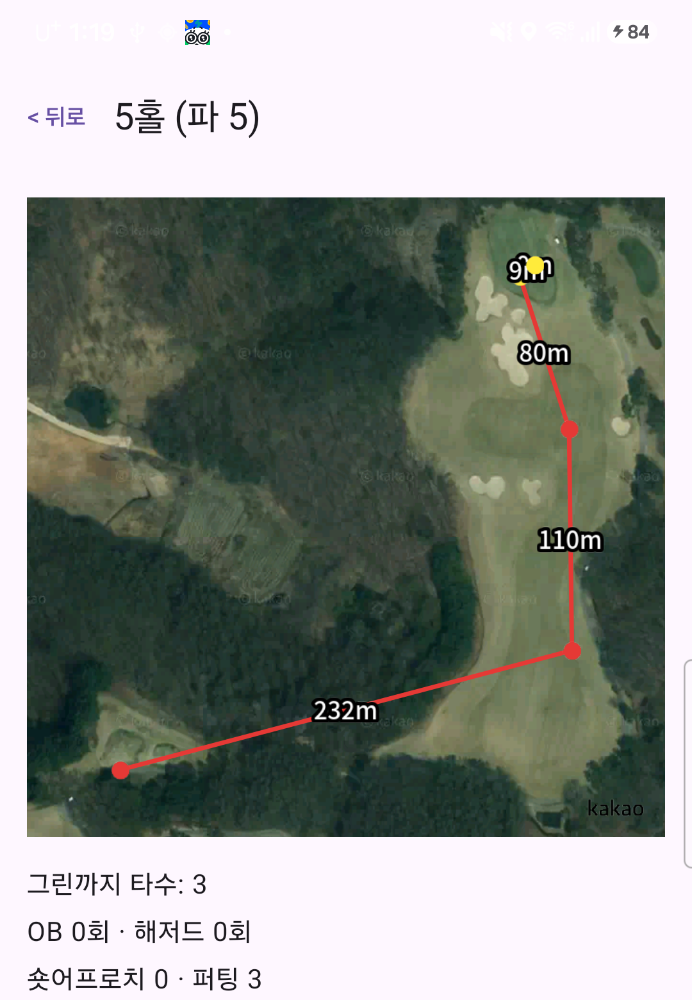

처음 켜는 분을 위한 5분 가이드 — 코스 등록부터 라운드 결과 확인까지
맨 처음엔 등록된 코스가 없어요. 홈 화면 오른쪽 위 "코스 관리"를 눌러 "새 코스 추가"로 들어가면, 코스 이름과 18홀 각각의 파(3/4/5)를 정할 수 있어요.
한 번 등록해두면 다음부터는 라운드 시작할 때 목록에서 고르기만 하면 돼요.


홈 화면에서 "새 라운딩 시작!"을 누르면 코스 목록이 뜨고, 맨 위에 스위치 두 개가 있어요. 대부분은 그냥 끈 채로 시작하면 되고, 아래 상황에서만 켜주면 돼요.
코스를 누르면 바로 1홀부터 라운드가 시작돼요.

위성 지도 아래 버튼으로 그린까지 타수 · OB · 해저드 · 숏어프로치 · 퍼팅을 그때그때 +/-로 기록해요. 버튼을 누른 순간의 GPS 위치가 지도 위에 점으로 남아요.
지도가 내 위치와 다르게 보이면 오른쪽 위 "위치 조정"을 눌러 다시 맞출 수 있고, 한 홀이 끝나면 "다음 홀"로 넘어가면 돼요.

화면 위 "< 뒤로"를 누르면 언제든 지금까지의 결과 화면으로 이동해요. 총타수, GIR, 홀별 기록을 볼 수 있고 라운딩 가격·동반자·후기도 선택으로 남길 수 있어요.
이 화면은 라운드 도중에도, 다 끝낸 뒤에도 같은 곳에서 볼 수 있어요 — 홀을 다 안 돌아도 기록은 사라지지 않아요.

홈 화면엔 완료한 라운드가 최신순으로 쌓여요. 코스 이름 아래로 날짜·시간·소요시간, 그 아래로 그린피·동반자 이름과 각자 스코어가 한 줄씩 표시되고, 오른쪽엔 이번 라운드 스코어 배지가 떠요 — 배지 색으로 이븐(초록) · 언더파(파랑) 같은 결과를 한눈에 구분할 수 있어요. 라운드를 누르면 그때 기록을 다시 열어볼 수 있어요.
화면 맨 아래 백업 / 복원으로 전체 기록을 파일 하나로 저장해두는 것도 추천해요.
지난 라운드의 홀 하나를 다시 열어보면, 그 홀에서 친 샷들이 지도 위에 선으로 이어지고 샷과 샷 사이 실제 거리(m)가 같이 표시돼요.

